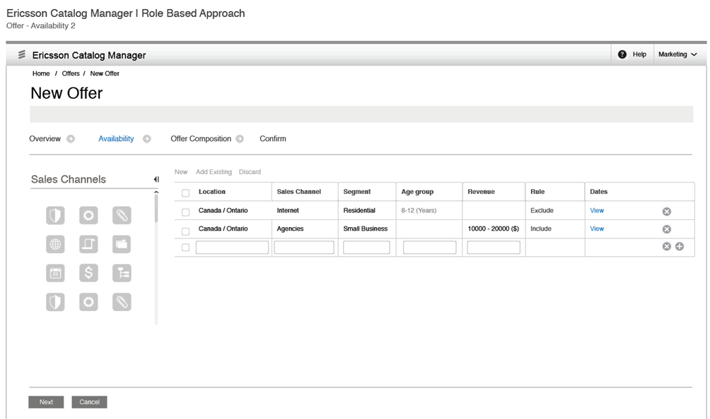

Business Dates APIsThe following APIs support business dates:
Additionally, the availability rule user interface provides support for business dates. Catalog API Support for Accessing DatesThe following API at the item level returns item dates by the given market segment information: datesArray getItemDatesByMarketSegment(String[] dimensionName, String[] dimensionValue) In this API, the dimensionName parameter is an array of dimension names. The dimensionValue parameter is an array of dimension values. For each market segment dimension, only one value is allowed. Notes:
If the marketSegmentContext is not specified, the marketSegmentContext set at the system level is used. If that is not set, the default item level dates are returned. By default, the item dates are returned for that version. However, if the flag is set, the dates of the latest version are returned. Browse APIThe Browse API has the following syntax to handle market segment availability rules: select [distinct] [from [theCatalog] [hierarchy_node_name] [depth search_depth]] [in hierarchy_node_name[,hierarchy_node_name]...] [where attribute_name/function operation ?/constant/list and attribute_name/function operation ?/constant/list and...] [order[ed] by rank()/attribute_name] [Dimension Dimension1Code in Dimension1_hierarchyNodeName [, Dimension2_hierachyNodeName]... and Dimension2Code in Dimension2_hierarchyNodeName [, Dimension2_hierachyNodeName]... and Dimension3Code in Dimension3_hierarchyNodeName [, Dimension3_hierachyNodeName]... and...] [Dates advertisingStartDate [><=] dateValue and sellingStartDate [><=] dateValue and...] The following are sample queries using the select statement. Example 1: Select from theCatalog Dimension Location in Toronto, Montreal and SalesChannel in selfcare, residential Example 2: Select from HandSets In iphone Dimension Location in Toronto, Montreal and SalesChannel on selfcare, residential Notes:
Availability Rule User InterfaceThe following image depicts the availability rule using five dimensions:  You can tailor the user interface to show only two dimensions if a client application needs to use only two of the five dimensions. You can also use this user interface to build rules for other associations, such as item relation conditions based on the market segment. For more information about these APIs that support business dates, see the JavaScript Documentation. |